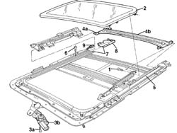
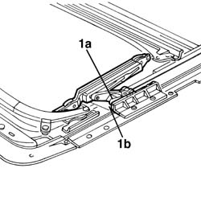
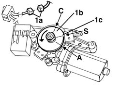

7030B45 cable - r r
- Path
- Procedures > 70 FITTINGS > 7030 SUN ROOF AND HOOD > 7030B sliding roof > 7030B45 cable - r r
- Kind
- repair procedure (removal / refitting; the operation number is the code)
- Applies to
- all engines; all production periods
- Interactive page
- https://sloeber94.github.io/elrnDB-a156/en/#/3238764
Applies to: all engines; all production periods
 Removing
Removing
 Refitting
RefittingPlace manually using the pinion engine pin, the trasparent in the open position
1. Loosen the screws
2. Remove the trasparent
3. Loosen the fixing screws (3a) and clear the engine (3b) from the entrainment hoses
4. Disconnect the pins (4a) of the drainage central (4b).
5. Remove the race from the guides
6. Loosen the posterior screw
7. Remove the seal between the water unloading terminal and the guide
8. Remove the water unloading terminal
9. Move back the slide so to release the entrainment hose
Remove the entrainment hose

Applies to: all engines; all production periods
Refitting
RemovingVerify that the entrainment hose has no sign of damage or wear.
Install the entrainment hose in the sliding side the
Anchor the entrainment hose to the slide
Install the water unloading terminal
Apply the polyurethan seal than level it in order to allow the water passage
Tighten the posterior fixing screw
Insert the race in the guides
Connect the pins of the drainage race
1. Working on both guides, place manually the slides (1a) to the anterior endrun (1b) (open position).

Applies to: all engines; all production periods
1. Before reassemble the engine connect it to the electric connection (1a) and let the cam (1b) turn until its "S" points corrisponds with the microswitch (1c). The rotation shoul take place in the clockwise direction passing through the "C" point.

Applies to: all engines; all production periods
Assemble the engine and fix it with the screws
Assemble the transparent and fix it with the screws
Place manually using the pinion engine pin, the trasparent in the close position